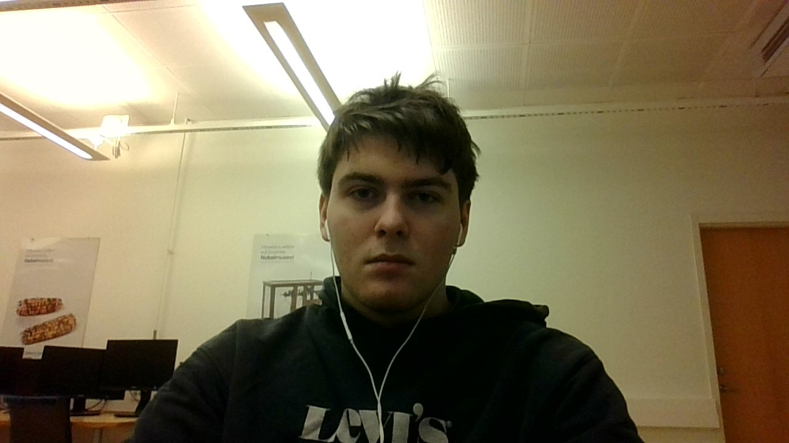

Hej!👋 Jag är Melker.
En framtida spelprogrammerare från Stockholm
Om mig
Intressen
Jag finner stor glädje i att lära mig programmera spel på min fritid.
Jag tycker även sporten Thai boxning är väldigt rolig då man tränar både sin kondition och styrka på ett roligt sätt.
Favorit rätter
- Hamburgare
- Pasta Carbonara
- Stek med rödvins sås
Favorit deserter
- Creme brulé
- Wienerbröd
- Maple pecan
Frukost prion
- Kaffe är ett måste
- Ägg och bacon
- Mjukt bröd med smör, skinka och ost